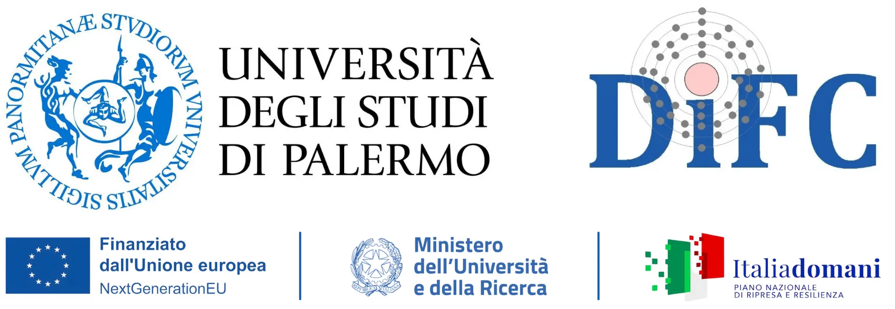

ISQCMC ’25 : 3rd International Symposium on Quantum Computing and Musical Creativity
Palermo, Palazzo Steri, University of Palermo, Italy
October 28-29, 2025
Conference chairs: Maria Mannone (CNR, Italy and Universität Potsdam, Germany), Lucia Rizzuto (University of Palermo, Italy),
Advisory Board: Eduardo Miranda (University of Plymouth, UK)
Registration: free
Call for papers
Deadline for paper submission: March 1, 2025; Page limit: 5 pages, Springer LNCS format
Notice of acceptance: June 15, 2025; deadline for the registration: July 14, 2025
Submission: email the PDF of your contribution to quantummusicsubmission AT gmail DOT com
Accommodation: to be announced
University of Palermo, Department of Physics and Chemistry “Emilio Segrè”, in partnership with Moth
